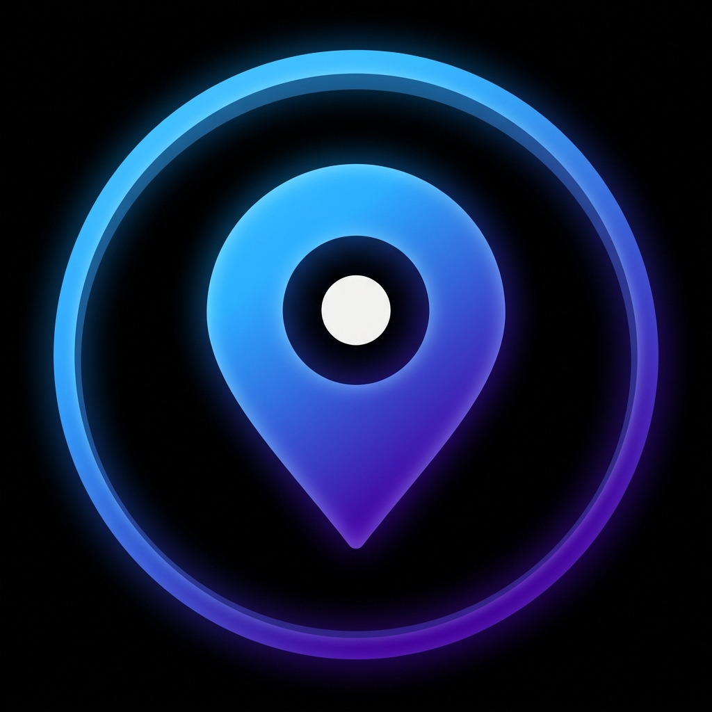

Correo Service
Agrega la base y los destinos

Ingresa tus credenciales para continuar
Usuario o contraseña incorrectos
Desarrollado por
GUARNIERI NETWORK
Próximo destino:
Calculando distancia...
Sigue derecho